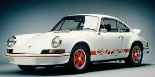

|
Istorija Auta |
|
Porsche je nemački proizvođač sportskih automobila sa bogatom i fascinantnom istorijom koja seže unazad više od sedam decenija. Evo kratke istorije Porsche automobila:
1.Pocetak
Firma Porsche Automobil Holding SE je osnovana 1931. godine u Stuttgartu, Nemačka, od strane Ferdinanda Porschea, inženjera koji je stajao iza mnogih revolucionarnih koncepta u automobilskoj industriji. Porsche je bio odgovoran za stvaranje prvog prototipa Volkswagen "Bube" (Beetle) i mnogih drugih inovacija.
2.Prvi Porsche automobili
Prvi pravi sportski automobil pod Porsche imenom bio je Porsche 356. Predstavljen 1948. godine, ovaj mali sportski automobil postao je ikona svoje ere i postavio temelje za buduće modele.
.jpg)
3.Porsche 911
1963. godine, Porsche je lansirao model 911, koji se brzo etablirao kao jedan od najpoznatijih sportskih automobila na svetu. Ovaj model je i danas u proizvodnji, sa brojnim evolucijama tokom godina, ali je zadržao svoj karakteristični oblik i performanse.
